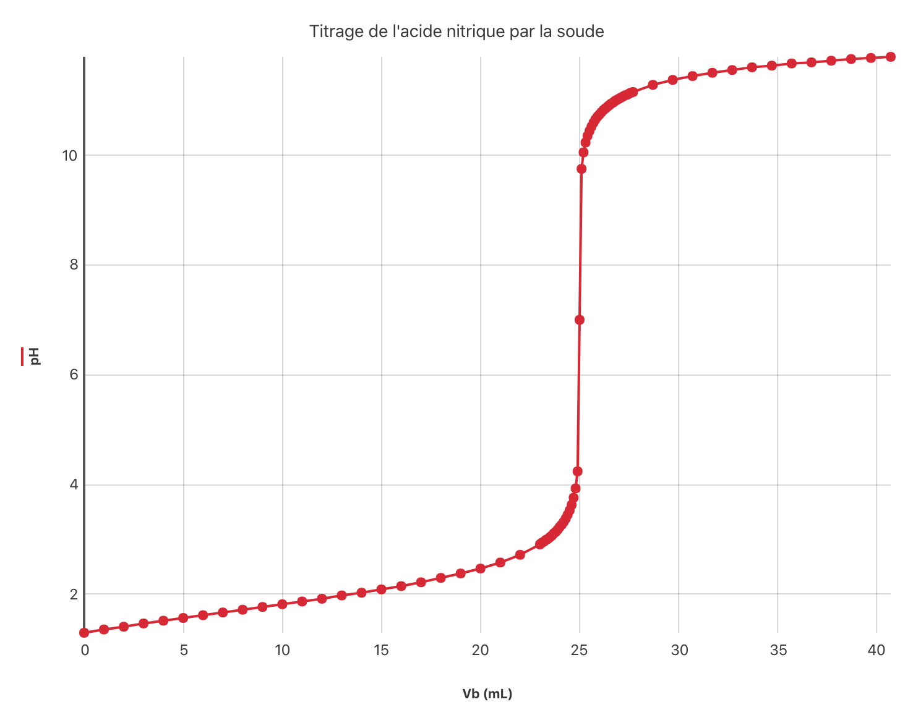
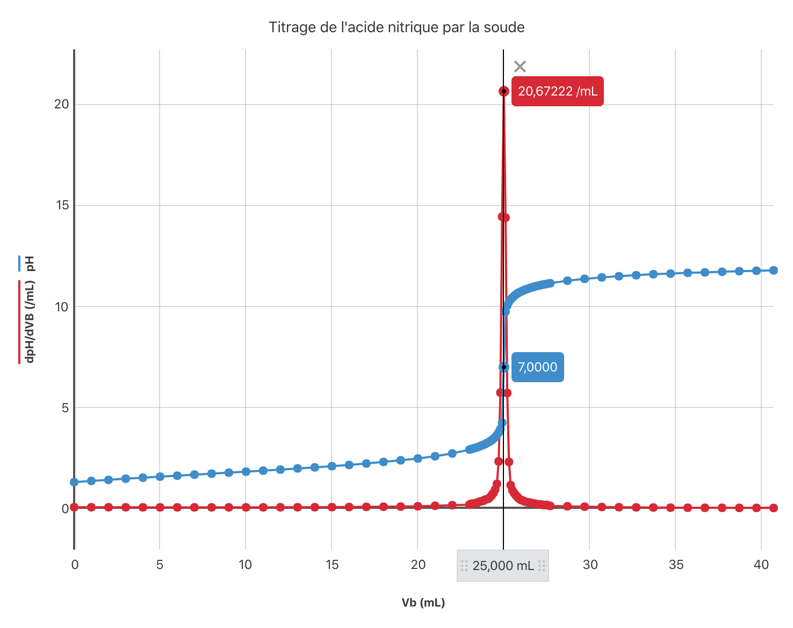
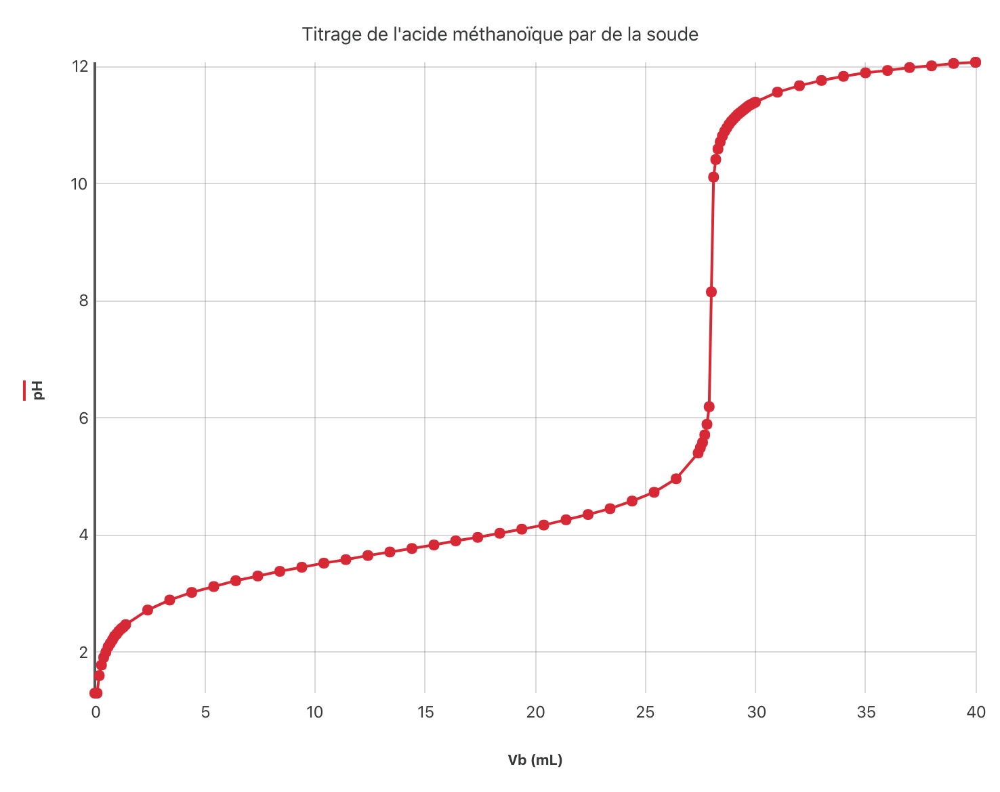
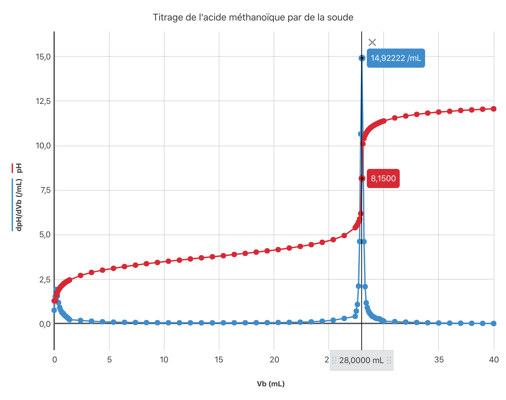
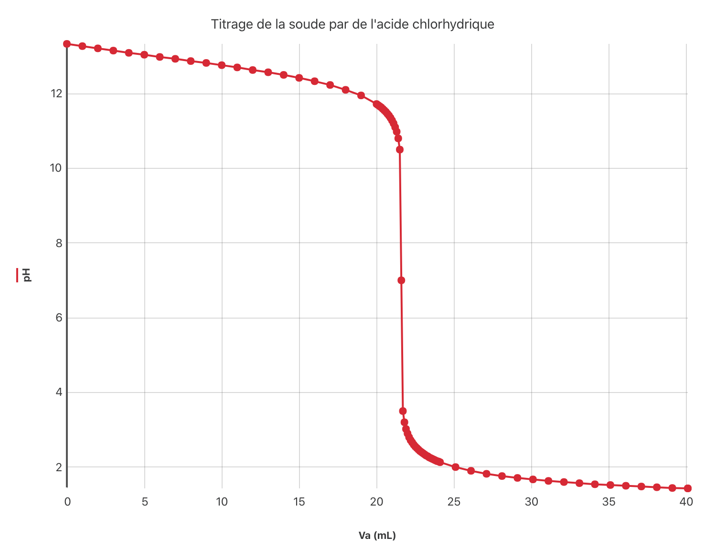
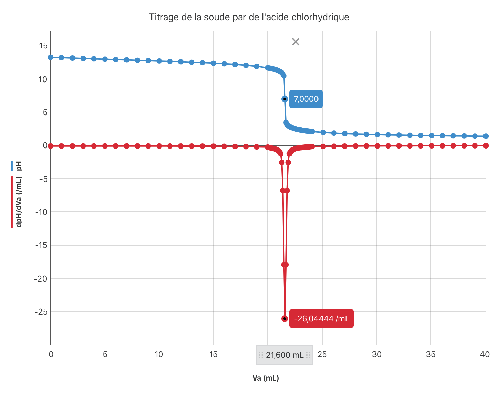
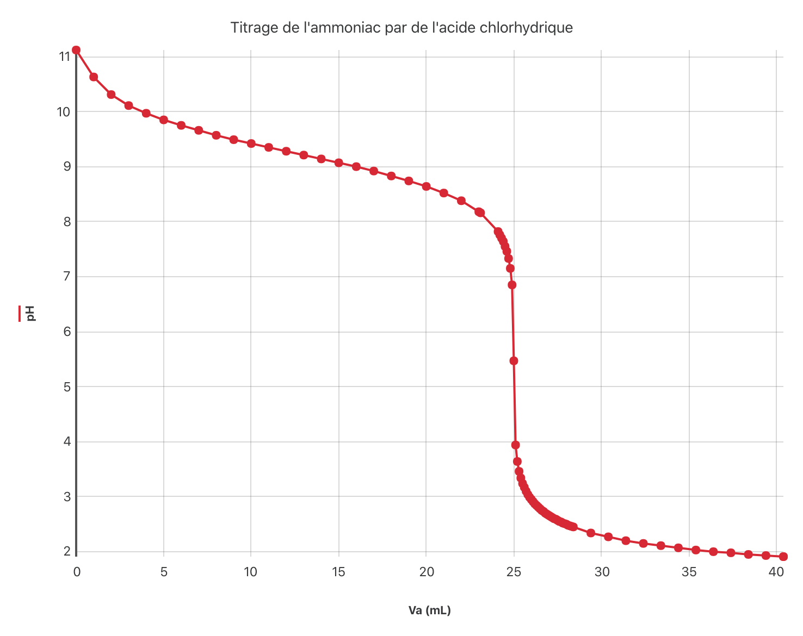
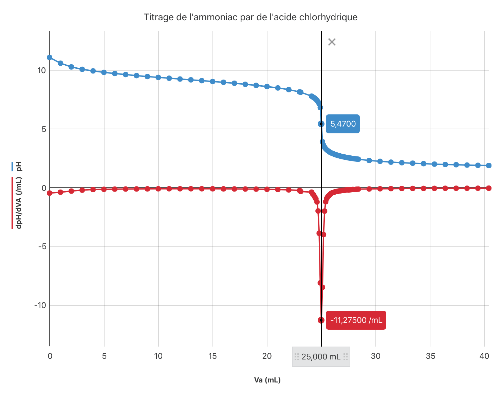

Rappels
Dosage, titrage
- Doser une espèce chimique dans une solution consiste à déterminer expérimentalement la concentration molaire de cette espèce chimique dans la solution.
- Lorsqu’un dosage s’appuie sur une réaction chimique on parle de titrage.
Conditions à remplir pour qu’une réaction chimique puisse être utilisée lors d’un titrage
Pour pouvoir être utilisée lors d’un titrage, une réaction chimique doit être :
- rapide ;
- unique dans le milieu (elle seule doit consommer l’entité dosée) ;
- la modélisation d’une transformation chimique totale.
Point équivalence
- Le point d’équivalence (ou équivalence) d’un titrage est le point où on change de réactif limitant.
- À l’équivalence, l’entité titrée et l’entité titrante ont été introduites dans les proportions stœchiométriques. Ces deux entités (titrée et titrante) sont donc absentes dans le milieu au point d’équivalence.
Titrage par suivi pH-métrique d’un acide ou d’une base
Titrage d’une solution d’acide nitrique (acide fort) par une solution de soude (base forte)
On réalise le titrage d’une solution d’acide nitrique $\ce{HNO3}$ de volume $V_A = \pu{10 mL}$ et de concentration $C_A$ inconnue, par une solution de soude de concentration $C_B = \pu{0,02 mol.L-1}$.
On réalise un suivi pH-métrique et on traite les
données expérimentales
grâce au logiciel
Graphical Analysis
de Vernier.
- Lors de ce titrage, quel est le titrant ? Le titré ?
Réponse
- Le titré est l’acide nitrique.
- Le titrant est l’ion hydroxyde présent dans la solution de soude $(\ce{Na^+ + HO^-})$.
- Écrire l’équation du titrage.
Réponse
$\ce{HNO3 + HO^- -> NO3^- + H2O }$
Lors d’un suivi pH-métrique on verse progressivement le titrant initialement contenu dans une burette dans le bécher (ou l’erlenmeyer) contenant le titré et on mesure la valeur du pH après chacun de ces ajouts.
-
Faire un schéma légendé du montage (Mots à placer en plus des entités chimiques: burette, erlenmeyer (ou bécher), barreau aimanté, agitateur magnétique, sonde à pH, pH-mètre).
-
Le résultat du suivi est donné par la courbe suivante1 :  Cette courbe présente trois parties distinctes et caractéristiques, les identifier et les commenter.
Réponse
La courbe présente :
- une première partie, dans le domaine acide, dans laquelle le pH croit assez peu lorsqu’on introduit le titrant dans la solution ;
- une deuxième partie dans laquelle un faible ajout de titrant fait brutalement basculer le milieu d’une solution acide à une solution basique . On dit que le saut de pH est très important ;
- une troisième et dernière partie, dans le domaine basique, dans laquelle le pH croit à nouveau assez peu lorsqu’on introduit le titrant dans la solution.
- Pourquoi la solution passe-t-elle du domaine acide au domaine basique lors de ce titrage ?
Réponse
- Dans un premier temps, le titrant (ion hydroxyde) est le réactif limitant. La solution contient donc de l’eau, des ions nitrates $\ce{NO3^-}$, base indifférente dans l’eau, des ions sodium $\ce{Na^+}$, introduits avec les ions hydroxyde et de l’acide nitrique. Elle est donc acide et le pH inférieur à 7,0.
- Au delà de l’équivalence, le titré (acide nitrique) est le réactif limitant. La solution contient donc de l’eau, des ions nitrates $\ce{NO3^-}$, base indifférente dans l’eau, des ions sodium $\ce{Na^+}$, introduits avec les ions hydroxyde et des ions hydroxyde, base forte. Elle est donc basique et le pH supérieur à 7,0.
- Analyser le contenu de la solution à l’équivalence et indiquer quel doit être le pH du point équivalent.
Réponse
L’équivalence est l’instant du titrage où on change de réactif limitant. Les réactifs ont alors été introduits dans les proportions stœchiométriques et leur quantité de matière est nulle. Le milieu ne contient donc que des ions nitrates $\ce{NO3^-}$, base indifférente dans l’eau, des ions sodium $\ce{Na^+}$, introduits avec les ions hydroxyde, et de l’eau. On s’attend donc à ce que la solution soit neutre, c’est à dire à ce que $pH = \pu{7,0}$.
- Placer le point d’ordonnée $pH = \pu{7,0}$ sur la courbe. Quelle particularité mathématique présente ce point ?
Réponse
- Ce point est un point d'inflexion ; c’est l'endroit où la courbe change de courbure.
- Lorsque le volume de titrant versé augmente, en amont du point d’inflexion, le coefficient directeur de la tangente, positif car la fonction est croissante, augmente.
- Au-delà du point d’inflexion, lorsque le volume de titrant versé augmente, le coefficient directeur de la tangente, positif car la fonction est croissante, diminue.
- À partir de la réponse à la question précédente, indiquer quel outil mathématique permettrait de repérer facilement le point d’équivalence.
Réponse
Le coefficient directeur de la tangente évolue autour du point d’équivalence.
Le coefficient directeur de la tangente à une courbe en un point étant le nombre dérivé de la fonction en ce point, il semble donc logique de calculer la dérivée du pH par rapport au volume de titrant versé : $\dfrac{\mathrm{d\,pH}}{\mathrm{dV_B}}$
Repérage de l’équivalence lors d’un titrage par suivi pH-métrique
Lors d’un suivi pH-métrique, deux méthodes permettent de déterminer la position du point d’équivalence :
- On détermine l'allure de la fonction dérivée à la fonction $pH = f(V)$ où $V$ est le volume de titrant introduit dans la solution :
- L’abscisse du maximum de la fonction dérivée $\dfrac{\mathrm{d\,pH}}{\mathrm{dV_B}}$ est identique à l’abscisse du point d’équivalence.
ou
- On utilise la méthode des tangentes :
- On trace une tangente à la courbe $pH = f(V)$ en amont du point d’équivalence ;
- On trace la tangente à la courbe parallèle à la première tangente et située après le point d’équivalence ;
- On trace la droite parallèle aux deux tangentes, située à égale distance de ces deux tangentes.
- Le point d’équivalence se trouve à l’intersection de cette dernière droite et de la courbe expérimentale.
- Déterminer les coordonnées du point équivalence pour le titrage de l’acide nitrique par la solution de soude. 
Réponse
$(V_{BE} = \pu{25 mL}; pH = \pu{7,0})$
- En déduire la concentration $C_A$ de l’acide nitrique.
Réponse
À partir du tableau d’avancement on détermine que $x_E = C_A \, V_A = C_B\, V_{BE}$ donc $C_A = C_B \, \dfrac{V_{BE}}{V_A}$.
A.N. $C_A = \pu{0,02 mol.L-1} \times \dfrac{\pu{25 mL}}{\pu{10 mL}} = \pu{0,05 mol.L-1}$
Titrage d’une solution d’acide méthanoïque (acide faible) par une solution de soude (base forte)
On réalise le titrage d’une solution d’acide méthanoïque de volume $V_A = \pu{10 mL}$ et de concentration $C_A$ inconnue, par une solution de soude de concentration $C_B = \pu{0,05 mol.L-1}$.
On réalise un suivi pH-métrique et on traite les
données expérimentales
grâce au logiciel
Graphical Analysis
de Vernier.
- Lors de ce titrage, quel est le titrant ? Le titré ?
Réponse
- Le titré est l’acide méthanoïque $\ce{HCO_2H}$.
- Le titrant est l’ion hydroxyde présent dans la solution de soude $(\ce{Na^+ + HO^-})$.
- Écrire l’équation du titrage.
Réponse
$\ce{HCO_2H + HO^- -> HCO_2^- + H2O }$
Lors d’un suivi pH-métrique on verse progressivement le titrant initialement contenu dans une burette dans le bécher (ou l’erlenmeyer) contenant le titré et on mesure la valeur du pH après chacun de ces ajouts.
-
Faire un schéma légendé du montage (Mots à placer en plus des entités chimiques : burette, erlenmeyer (ou bécher), barreau aimanté, agitateur magnétique, sonde à pH, pH-mètre).
-
Le résultat du suivi est donné par la courbe suivante :  Cette courbe présente quelques différences avec la courbe correspondant au suivi pH-métrique du titrage d’un acide fort par une base forte. Les identifier.
Réponse
- Dans la première partie, dans le domaine acide, le pH varie un peu plus lorsqu’on introduit le titrant dans la solution ;
- Le saut de pH est moins important (et ce d’autant plus que l’acide faible est dilué) dans la deuxième partie ;
- Déterminer les coordonnées du point équivalence pour le titrage de l’acide nitrique par la solution de soude. 
Réponse
$(V_{BE} = \pu{28 mL}; pH = \pu{8,2})$
- Pourquoi pouvait-on s’attendre à ce que l’ordonnée du point d’équivalence se trouve légèrement dans le domaine basique ?
Réponse
À l’équivalence, le milieu ne contient que de l’eau, des ions sodium et des ions méthanoate. Comme l’acide méthanoïque est un acide faible, l’ion méthanoate est une base faible. La solution contient une base, le milieu est basique.
- En déduire la concentration $C_A$ de l’acide méthanoïque.
Réponse
À partir du tableau d’avancement on détermine que $x_E = C_A \, V_A = C_B\, V_{BE}$ donc $C_A = C_B \, \dfrac{V_{BE}}{V_A}$.
A.N. $C_A = \pu{0,05 mol.L-1} \times \dfrac{\pu{28 mL}}{\pu{10 mL}} = \pu{0,14 mol.L-1}$.
Titrage d’une solution de soude (base forte) par une solution d’acide chlorhydrique (acide fort)
On réalise le titrage d’une solution de soude de volume $V_B = \pu{10 mL}$ et de concentration $C_B$ inconnue, par une solution d’acide chlorhydrique de concentration $C_A = \pu{0,1 mol.L-1}$.
On réalise un suivi pH-métrique et on traite les
données expérimentales
grâce au logiciel
Graphical Analysis
de Vernier.
- Lors de ce titrage, quel est le titrant ? Le titré ?
Réponse
- Le titrant est l’ion oxonium $\ce{H3O^+}$ présent dans la solution d’acide chlorhydrique $(\ce{H3O^+ + Cl^-})$.
- Le titré est l’ion hydroxyde présent dans la solution de soude $(\ce{Na^+ + HO^-})$.
- Écrire l’équation du titrage.
Réponse
$\ce{HO^- + H3O^+ -> 2 H2O }$
Lors d’un suivi pH-métrique on verse progressivement le titrant initialement contenu dans une burette dans le bécher (ou l’erlenmeyer) contenant le titré et on mesure la valeur du pH après chacun de ces ajouts.
-
Faire un schéma légendé du montage (Mots à placer en plus des entités chimiques : burette, erlenmeyer (ou bécher), barreau aimanté, agitateur magnétique, sonde à pH, pH-mètre).
-
Le résultat du suivi est donné par la courbe suivante :  Cette courbe présente trois parties distinctes et caractéristiques, les identifier et les commenter.
Réponse
La courbe présente :
- une première partie, dans le domaine basique, dans laquelle le pH décroît assez peu lorsqu’on introduit le titrant dans la solution ;
- une deuxième partie dans laquelle un faible ajout de titrant fait brutalement basculer le milieu d’une solution basique à une solution acide. Le saut de pH est très important ;
- une troisième et dernière partie, dans le domaine acide, dans laquelle le pH décroît à nouveau assez peu lorsqu’on introduit le titrant dans la solution.

- Justifier l’allure de la fonction $\dfrac{\mathrm{d\,pH}}{\mathrm{dV_A}}$.
Réponse
- Lorsque le volume de titrant versé augmente, en amont du point d’inflexion, le coefficient directeur de la tangente, négatif car la fonction est décroissante, augmente en valeur absolue.
- Au-delà du point d’inflexion, lorsque le volume de titrant versé augmente, le coefficient directeur de la tangente, négatif car la fonction est décroissante, diminue en valeur absolue.
- Déterminer les coordonnées du point équivalence pour le titrage de la soude par la solution d’acide chlorhydrique.
Réponse
$(V_{BE} = \pu{21,6 mL}; pH = \pu{7,0})$
- Pourquoi pouvait-on s’attendre à ce que l’ordonnée du point d’équivalence soit $pH = \pu{7,0}$ ?
Réponse
À l’équivalence, le milieu ne contient que de l’eau et des ions sodium. La solution doit donc être neutre.
- En déduire la concentration $C_B$ de la soude.
Réponse
À partir du tableau d’avancement on détermine que $x_E = C_A \, V_{AE} = C_B\, V_{B}$ donc $C_B = C_A \, \dfrac{V_{AE}}{V_B}$.
A.N. $C_A = \pu{0,1 mol.L-1} \times \dfrac{\pu{21,6 mL}}{\pu{10 mL}} = \pu{0,2 mol.L-1}$.
Titrage d’une solution d’ammoniac (base faible) par une solution d’acide chlorhydrique (acide fort)
On réalise le titrage d’une solution d’ammoniac de volume $V_B = \pu{10 mL}$ et de concentration $C_B$ inconnue, par une solution d’acide chlorhydrique de concentration $C_A = \pu{0,04 mol.L-1}$.
On réalise un suivi pH-métrique et on traite les
données expérimentales
grâce au logiciel
Graphical Analysis
de Vernier.
- Lors de ce titrage, quel est le titrant ? Le titré ?
Réponse
- Le titrant est l’ion oxonium $\ce{H3O^+}$ présent dans la solution d’acide chlorhydrique $(\ce{H3O^+ + Cl^-})$.
- Le titré est l’ammoniac $(\ce{NH3})$.
- Écrire l’équation du titrage.
Réponse
$\ce{NH3 + H3O^+ -> NH4^+ + H2O }$
Lors d’un suivi pH-métrique on verse progressivement le titrant initialement contenu dans une burette dans le bécher (ou l’erlenmeyer) contenant le titré et on mesure la valeur du pH après chacun de ces ajouts.
-
Faire un schéma légendé du montage (Mots à placer en plus des entités chimiques : burette, erlenmeyer (ou bécher), barreau aimanté, agitateur magnétique, sonde à pH, pH-mètre).
-
Le résultat du suivi est donné par la courbe suivante :  Cette courbe présente quelques différences avec la courbe correspondant au suivi pH-métrique du titrage d’une base forte par un acide fort. Les identifier.
Réponse
- Dans la première partie, dans le domaine basique, le pH diminue un peu plus lorsqu’on introduit le titrant dans la solution. De plus, le pH initial est plus petit ;
- Le saut de pH est moins important (et ce d’autant plus que la base faible est diluée) dans la deuxième partie ;

- Justifier l’allure de la fonction $\dfrac{\mathrm{d\,pH}}{\mathrm{dV_A}}$.
Réponse
- Lorsque le volume de titrant versé augmente, en amont du point d’inflexion, le coefficient directeur de la tangente, négatif car la fonction est décroissante, augmente en valeur absolue.
- Au-delà du point d’inflexion, lorsque le volume de titrant versé augmente, le coefficient directeur de la tangente, négatif car la fonction est décroissante, diminue en valeur absolue.
- Déterminer les coordonnées du point équivalence pour le titrage de l’ammoniac par la solution d’acide chlorhydrique.
Réponse
$(V_{BE} = \pu{25 mL}; pH = \pu{5,5})$
- Pourquoi pouvait-on s’attendre à ce que l’ordonnée du point d’équivalence soit légèrement dans le domaine acide ?
Réponse
À l’équivalence, le milieu contient de l’eau, des ions sodium et des ions ammonium, acide faible. La solution contient un acide, elle est donc acide.
- En déduire la concentration $C_B$ de l’ammoniac.
Réponse
À partir du tableau d’avancement on détermine que $x_E = C_A \, V_{AE} = C_B\, V_{B}$ donc $C_B = C_A \, \dfrac{V_{AE}}{V_B}$.
A.N. $C_A = \pu{0,04 mol.L-1} \times \dfrac{\pu{25 mL}}{\pu{10 mL}} = \pu{0,1 mol.L-1}$.
-
Utiliser le logiciel et les données expérimentales pour parvenir à cette courbe. ↩︎